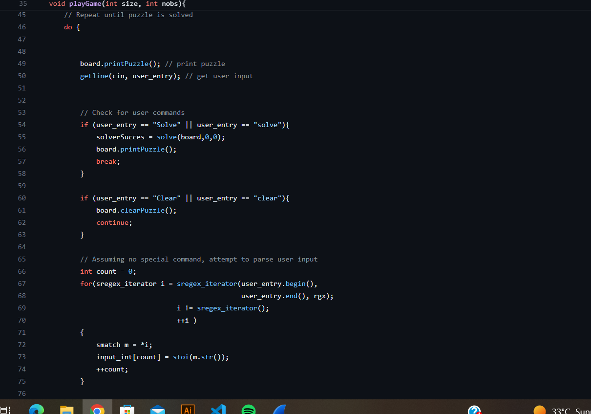
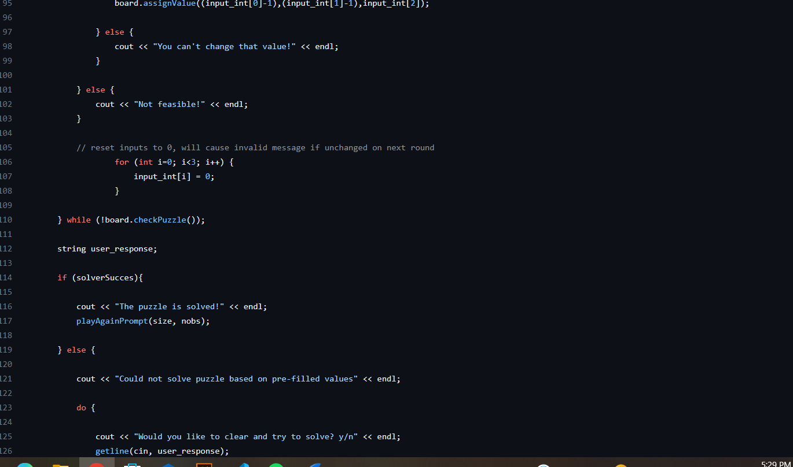
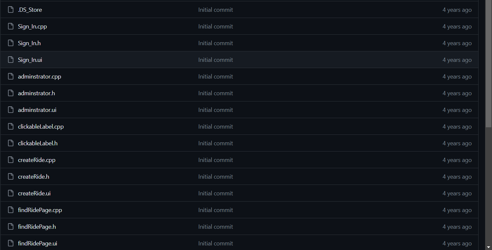
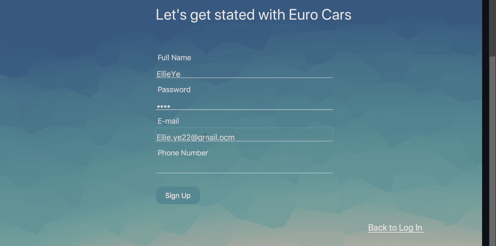
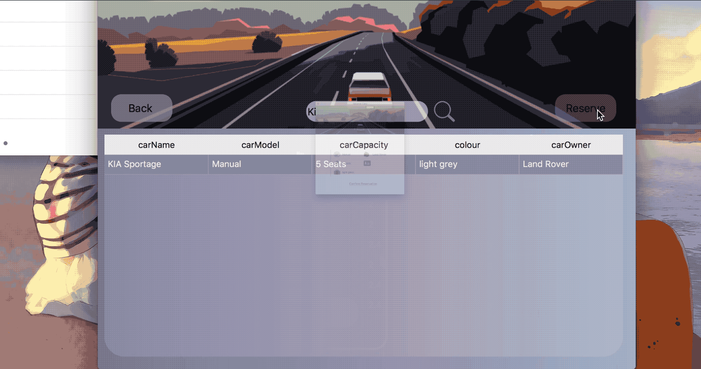

Welcome to my portfolio website!
HI! I'm Qanita.Here, you can learn more about my academic achievements and skills.
Hello, I'm Qanita Binte Younas.I am passionate about Computer Science.
My academic journey has been marked by a strong focus on Programming. I am currently studying in 5th semester in Computer Science.
Some of my key skills and areas of expertise include:
Throughout my academic career, I have had the privilege of receiving several awards and honors. These experiences have motivated me to continue pushing the boundaries of knowledge in Computer Science and to make a positive impact in the world.
Feel free to explore my portfolio to see some of the projects I've worked on, and don't hesitate to reach out if you have any questions or opportunities for collaboration!
Educational Background:
Technical/Professional Skills:
Projects:
Here, you can find my resume and detailed information about my academic and professional background. Download my resume Download resume.
Explore my portfolio to see some of the projects I've worked on.
Sudoku is available on every phone and laptop, considered one of the favorite games, especially by those who take interest in solving number puzzles. In this game, the idea of backtracking is employed. The only thing in this project is to understand the method of backtracking to look for those rows and columns that are initially blank.
 Such apps have made our life more effortless. There is no speck of doubt that these systems are performing great on their end, but these apps ought to have some more up-gradations. Improving and modifying those apps with the exact principle, and employing top-level codons can be an excellent C++ project that can guide you to learn many new things for sure. You can make use of Format text files in C++ to accumulate Cab and the customer’s GPS coordinate within a certain radius. Furthermore, these types of applications should have the flexibility of modifications and new updates with time.
  If you'd like to get in touch with me, feel free to reach out via email at qanitayounas973@gmail.com.
Visit my github